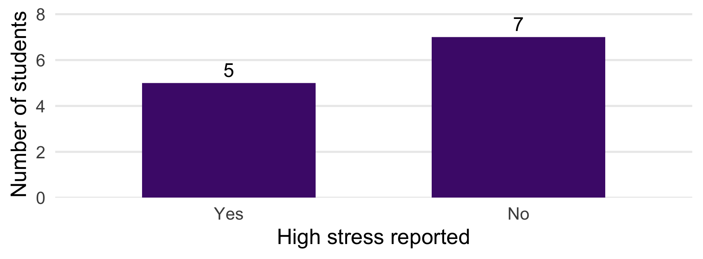

12 of the 150 responses from a fictional TCU survey. Each row represents one student.
Respondent
Sleep hours per night
001
5.0
002
7.0
003
6.5
004
5.5
005
8.0
006
6.0
Respondent
Sleep hours per night
007
4.5
008
7.5
009
6.0
010
5.0
011
6.5
012
7.0
Average Sleep Duration
Across all 150 respondents in the fictional TCU survey, the average is 6.2 hours per night.
What conclusions can the group draw from these data?
What Statistics Adds
Question
What we need
What did we observe?
Counts, percentages, summaries, and graphs
How much do observations differ?
Measures of spread
What might this tell us about a population?
Sampling information and statistical inference
Target Population, Source Population, and Sample
Suppose the survey recruits students leaving the library one evening.
Group
Who belongs to it?
In our example
Target population
People we want findings to apply to
All students enrolled at TCU in Fall 2026
Source population
People from whom we select participants
TCU students leaving that library that evening
Study sample
People whose data we analyze
The 150 students who respond to the survey
How well might these respondents represent all TCU students?
Descriptive and Inferential Statistics
Descriptive Statistics
Describe the sample we observed.
Inferential Statistics
Use sample data to make inferences about the target population.
Question: Describing or Inferring?
Statement A
“The 150 respondents reported an average of 6.2 hours of sleep.”
Statement B
“We estimate the average sleep duration of all TCU students from the sample.”
Which statement describes observed data? Which makes an inference?
What would you need to know before trusting Statement B?
Population and Sample Summaries
We use the mean sleep duration in our sample to estimate the mean in our target population.
What do we call a numerical summary of a population? Of a sample?
Target population
Sample
Numerical summary
Parameter
Statistic
Example
Mean sleep for all TCU students
Mean sleep for 150 respondents
Mean symbol
A sample statistic can estimate a population parameter.
Question: Statistic or Parameter?
The mean sleep duration among 150 surveyed TCU students is 6.2 hours. What is 6.2 hours?
A. A population parameter
B. A sample statistic
C. Both
D. Neither
What Is a Variable?
How would you define a variable? Give one example from a student health survey.
A variable is a characteristic that can take different values across observations.
One student
Values recorded
Sleep duration
6.5 hours per night
High stress reported
Yes
Stress rating
High
Number of caffeinated drinks yesterday
2
Review: Categorical Variables
What are the two types of categorical variables? How do they differ?
Kind
Distinction
Example
Nominal
Categories without a natural order
Major; yes/no response
Ordinal
Categories with an order
Low/moderate/high stress
A numerical code does not automatically make a category quantitative.
Review: Quantitative Variables
What are the two types of quantitative variables? How do they differ?
Kind
Distinction
Example
Discrete quantitative
Countable numerical values
Number of drinks
Continuous quantitative
Measurements along a continuum
Sleep duration
Classify the Recorded Values
Classify each variable.
Caffeine use: yes / no
Sleep duration: 5.5 / 6.0 / 7.5 hours
Stress rating: low / moderate / high
Number of nights studied past midnight: 0 / 1 / 2 / … / 7
Choose a Summary
Choose the summary from the variable and the question.
Variable
Start with
High stress: yes/no
Counts, percentages, bar graph
Low/moderate/high stress
Ordered counts and percentages
Sleep hours
Distribution, center, and spread
A Small Practice Dataset
12 fictional students. Each row represents one student.
Student
Sleep hours
High stress?
S01
5.0
Yes
S02
5.5
Yes
S03
6.0
Yes
S04
6.0
No
S05
6.5
Yes
S06
6.5
No
Student
Sleep hours
High stress?
S07
7.0
Yes
S08
7.0
No
S09
7.5
No
S10
8.0
No
S11
8.0
No
S12
9.0
No
Counts and Percentages
High stress reported
Count
Percentage
Yes
5
41.7%
No
7
58.3%
Total
12
100%
A Bar Graph of the Same Responses

Grouped Frequency Tables
Sleep duration
Count
5 to less than 6 hours
2
6 to less than 7 hours
4
7 to less than 8 hours
3
8 to less than 9 hours
2
9 to less than 10 hours
1
Total
12
Where does someone reporting exactly 7 hours belong?
What Grouping Hides
The 7 to less than 8 hours interval contains 3 students.
From that grouped table alone:
We know there are three observations in the interval.
We do not know how many are exactly 7 hours.
We cannot recover the exact mean sleep duration.
A Familiar 2×2 Table
Sleep duration
High stress: yes
High stress: no
Total
Less than 7 hours
4
2
6
7 hours or more
1
5
6
Total
5
7
12
Which group has the larger percentage reporting high stress?
Question: Which Denominator?
Of 12 fictional students, 6 report less than 7 hours of sleep. Of those 6, 4 report high stress. What percentage of the shorter-sleep group reports high stress?
A. 4 / 12 = 33.3%
B. 6 / 12 = 50.0%
C. 4 / 6 = 66.7%
D. 6 / 4 = 150.0%
Group Exercise: Describe This Sample
In groups of 3–4, use the data on the next slide.
Make a two-row frequency table for high stress: yes/no. Include counts and percentages.
Calculate the percentage sleeping less than 7 hours within each stress group: high stress yes; high stress no.
Write one sentence describing the comparison and one limitation.
Work for 5 minutes. Be ready to explain your denominators.
Group Exercise Data
Student
Sleep hours
High stress?
S01
5.0
Yes
S02
5.5
Yes
S03
6.0
Yes
S04
6.0
No
S05
6.5
Yes
S06
6.5
No
Student
Sleep hours
High stress?
S07
7.0
Yes
S08
7.0
No
S09
7.5
No
S10
8.0
No
S11
8.0
No
S12
9.0
No
Report: overall stress counts and percentages; shorter-sleep percentages within each stress group; one comparison and one limitation.
Group Exercise Debrief
Overall: 5 of 12 (41.7%) report high stress.
High stress reported
Less than 7 hours within the group
Yes
4/5 = 80.0%
No
2/7 = 28.6%
In this fictional sample, shorter sleep is more common among students reporting high stress.
How Would We Summarize Sleep Hours?
We have described categories using counts and percentages.
What should we ask about the continuous sleep measurements to summarize them?
What is a typical value? Center
How different are the values? Spread
What does the distribution look like? Shape
Review: Mean, Median, and Mode
Sorted sleep hours:
5, 5.5, 6, 6, 6.5, 6.5, 7, 7, 7.5, 8, 8, 9
Calculate the mean, median, and mode.
Mean: total hours ÷ number of students = 6.83 hours
Median: average of the two middle values = 6.75 hours
Modes:6, 6.5, 7, and 8 hours — each appears twice.
The Same Mean Can Hide Different Spread
Fictional group
Sleep hours
Mean
Range
A
6, 7, 8
7
B
4, 7, 10
7
Calculate the range for each group. Which group has more spread?
The Same Mean Can Hide Different Spread
Fictional group
Sleep hours
Mean
Range
A
6, 7, 8
7
2
B
4, 7, 10
7
6
Would “both groups average 7 hours” tell the whole story?
Connection to Prep 3
For your assigned dataset, you will:
Identify your variables and their types.
Summarize your continuous outcome with n, mean, SD, minimum, and maximum.
Describe a histogram and, after the correlation lesson, a scatterplot.
Next time: continuous summaries, graphs, and Excel practice.
Exit Check
One difference between a sample statistic and a population parameter.
A suitable summary for a yes/no variable.
What you must identify before calculating a percentage.
Sources
Yan Zhang. Statistics Overview and Descriptive Statistics, APHS 20203, 50-slide PowerPoint supplied with the course materials. Selected concepts and activities adapted for this lesson.
Friis’ Epidemiology 101, third edition, Chapter 2: “Epidemiology and Data Presentation.”
Course materials: approved October 20, 2026 outline and Group Presentation – Prep 3.
All student examples in this lesson are fictional teaching examples.